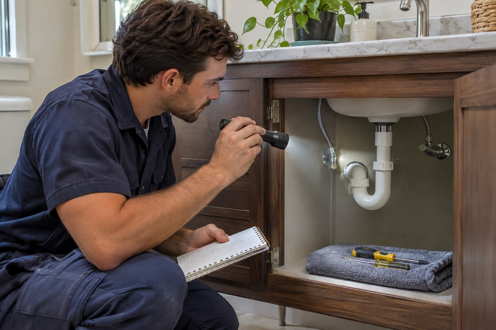

Leaks & repairs
Help with drips, running fixtures and the plumbing problems that interrupt your day.
When something goes wrong at home, knowing who to call makes all the difference. Plumbing help designed around real people and everyday problems.
A fictional example for demonstration only.

A straightforward way to show customers what you do and how to get in touch.
Help with drips, running fixtures and the plumbing problems that interrupt your day.
Support for repair, replacement and choosing a system that fits your home.
From slow drains to fixture updates, get the details explained clearly.
Tell us what’s going on. We’ll talk through the next steps, explain the work, and keep you informed along the way.
Let’s talk about your projectShare a few details about your plumbing issue or project.
Discuss timing, next steps and the work that may be needed.
Know what was done and what to expect next.
From a dripping faucet to a water heater that has stopped working, a local plumber can help you understand the issue and decide what to do next. Explore a sample of common residential plumbing services below.

Get help diagnosing leaks, worn valves, running toilets, low pressure, and other common plumbing problems in the home.
Ask about this service
Discuss fixture repairs and replacement for kitchens, bathrooms, laundry areas, and other spaces.
Ask about this service
Consider repair or replacement options for a water heater that is leaking, inconsistent, or no longer heating.
Ask about this serviceTalk through a slow or blocked drain and the appropriate next step for clearing it.
Ask about this serviceInvestigate visible leaks, unexpected moisture, and plumbing lines that may need repair.
Ask about this serviceAddress a running toilet, leaks around a fixture, flushing issues, or a planned replacement.
Ask about this serviceDiscuss a jammed, leaking, or aging kitchen disposal and available options.
Ask about this serviceHave unusual water pressure or a suspected valve problem assessed before choosing a fix.
Ask about this servicePlan plumbing changes for a kitchen, bathroom, or laundry update with the contractor.
Ask about this serviceThis example service area shows how a local plumbing business could describe the communities it serves. A real company should publish only the locations it actually covers.
Service coverage, availability, licensing, pricing, and capabilities are examples to confirm with the real business before publication.
Share what is happening, where the problem is, and the best way to reach you.
Confirm the service area, availability, and whether an onsite visit is needed.
Ask about the proposed work, estimated costs, timing, and any warranty before proceeding.
This demo illustrates repairs, water heaters, fixtures, drains, leak concerns, and renovation work. A real company should replace this list with services it actually provides.
Contact the business with your town or ZIP code. Service boundaries and scheduling availability vary by company.
Ask how the company handles estimates, diagnostic fees, and approval. Some work requires an onsite assessment before a firm price can be given.
If it is safe, turn off the relevant water supply and contact a qualified plumber. For an immediate safety emergency, contact the appropriate emergency services.
Emergency availability varies. A real business should replace this sample answer with its actual hours and response process.
Fictional website concept by Gombey Tech. Images are illustrative, and the services and locations shown are examples rather than claims about a real plumbing company.
This fictional demo does not accept service requests.